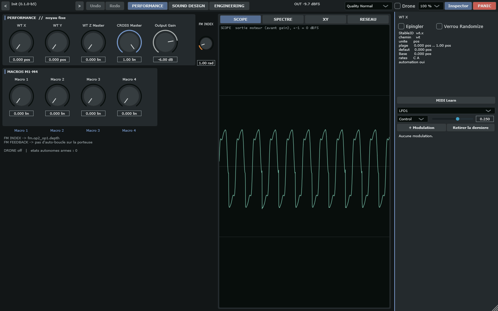
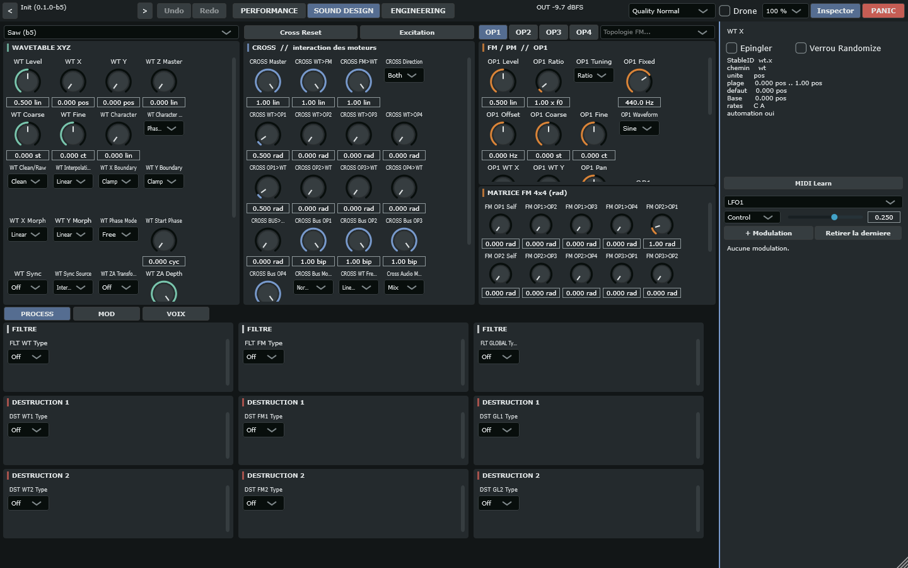
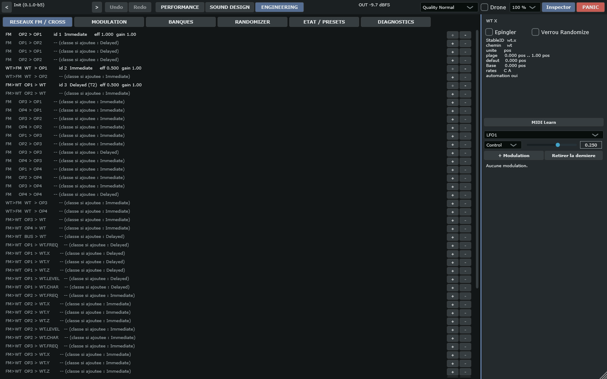
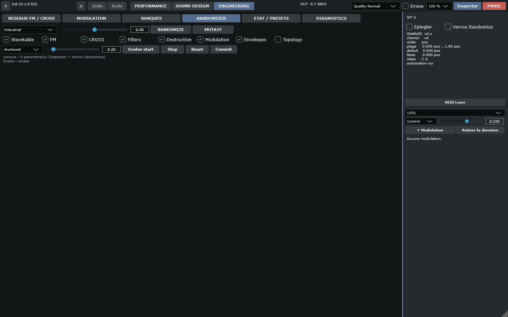
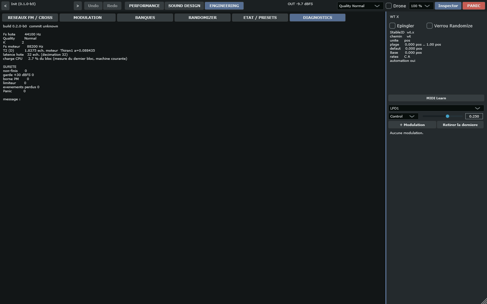

Comprendre le texte principal explique sans prérequis. Manipuler les étapes, réglages et exemples se font dans l'instrument. Approfondir les blocs repliés « Approfondir · » donnent le détail technique : vous pouvez les ignorer en première lecture.
Chapitre 1
Bienvenue dans SUBDESTRUCKT 0.2.0
SUBDESTRUCKT est un instrument construit autour de l'interaction entre deux moteurs : une wavetable et un moteur FM. Cette édition décrit la build de développement intégré ARCH-G4.
Statut de cette build
Build interne : ni beta, ni version publique. La diffusion publique du binaire est bloquée (licence JUCE non arbitrée, pas de signature Developer ID ni de notarisation).
Les fonctions décrites ont été testées automatiquement (tests du cœur DSP, du wrapper VST3, hôte VST3 et pluginval sur macOS arm64 virtualisé). La recette sur un vrai Mac reste à faire (chapitre 17).
Le graphisme de l'interface est provisoire : il sera finalisé après les tests d'ergonomie prévus.
Ce qui est nouveau depuis 0.1.0-b5
Une wavetable complète : banques de formes en grille X×Y (jusqu'à 64×16), transformations Z, Character, synchronisation, import de vos propres formes (WAV).
Quatre opérateurs FM (au lieu de deux) avec quatre modes de modulation : PM, Linear FM, Through-Zero FM, Exponential FM.
Le CROSS complet : 55 liaisons possibles entre la wavetable, les opérateurs et un bus FM, plus le Cross Audio (Mix, Crossfade, Ring, AM).
Trois filtres/résonateurs et six processeurs de destruction, avant ou après le filtre.
Cinq enveloppes, quatre LFO, sources aléatoires et chaos, une matrice de 64 modulations, quatre macros.
Une interface en trois espaces : Performance, Sound Design, Engineering.
Comment lire ce manuel
Chaque chapitre se lit à trois niveaux : le texte principal pour découvrir, les encadrés pour comprendre, les volets « Approfondir » pour les détails techniques. Les sons sont des rendus du moteur réel (chapitre 16). Les termes techniques renvoient au glossaire (chapitre 18).
Compatibilité
Les projets enregistrés avec 0.1.0-b5 s'ouvrent dans 0.2.0 et sonnent à l'identique (vérifié bit à bit par le test REG-01). L'inverse n'est pas vrai : 0.1.0-b5 refuse un état enregistré par 0.2.0.
Chapitre 2
Installation et désinstallation
SUBDESTRUCKT s'installe avec un paquet d'installation et se retire avec un paquet de désinstallation. Aucun autre plugin, projet ou preset n'est touché.
Distribution
Cette build n'est pas publiée. L'archive vous est remise par un canal privé décidé par la direction technique, avec son empreinte SHA-256. Ne l'installez pas si l'empreinte ne correspond pas.
Contenu de l'archive
SUBDESTRUCKT_Installer.pkg et SUBDESTRUCKT_Uninstaller.pkg
README_FR.txt, CHANGELOG.txt, SHA256SUMS.txt
Installer
Fermez toute DAW qui utilise SUBDESTRUCKT.
Vérifiez l'empreinte (chapitre 17, test R-01).
Ouvrez l'Installer. Le paquet n'est pas signé : macOS le signale. Ouvrez Réglages Système › Confidentialité et sécurité, puis « Ouvrir quand même » pour ce paquet uniquement. Ne désactivez jamais Gatekeeper globalement.
Saisissez votre mot de passe : le plugin est installé dans /Library/Audio/Plug-Ins/VST3/SUBDESTRUCKT.vst3.
Relancez la DAW et l'analyse des plugins si nécessaire.
Mettre à jour depuis 0.1.0-b5
Installez par-dessus : la version précédente est détectée, sauvegardée pendant l'opération et restaurée en cas d'échec.
Désinstaller
Ouvrez l'Uninstaller. Il ne retire que le bundle SUBDESTRUCKT identifié et son reçu. Vos presets (~/Library/Application Support/Labtechno/SUBDESTRUCKT/Presets) et votre MIDI Learn sont conservés.
Chapitre 3
Premières minutes
Charger un son, le transformer en moins de trente secondes, et revenir en arrière si besoin.
Ouvrez SUBDESTRUCKT dans une piste instrument et jouez une note : vous entendez Init, le son de 0.1.0-b5.
Avec les flèches < et > de la barre du haut, parcourez les presets d'usine : Cross Metal, FM Bell Bank, Doom Fold Comb, Glitch Lab, Spectral Formants, Ring Destroyer.
Dans l'espace Performance, tournez WT X et WT Y (la forme de la wavetable), puis WT Z (sa transformation), puis CROSS Master (l'intensité de l'interaction entre les deux moteurs).
Une erreur ? Undo annule le dernier geste complet (un mouvement de bouton = une étape).
Un son bloqué ou trop fort ? PANIC, toujours visible en haut à droite, coupe en douceur et réinitialise.
Preset init (identique a 0.1.0-b5)
Rendu du moteur réel 0.2.0 · 48 kHz · normalisé à −20 dBFS RMS · 3.0 s · détails au chapitre 16
Déplacer X : du sinus au carré (banque Basic)
Rendu du moteur réel 0.2.0 · 48 kHz · normalisé à −20 dBFS RMS · 3.0 s · 3.0 s · détails au chapitre 16
Chapitre 4
L'interface
Trois espaces de travail sur un même son : passer de l'un à l'autre, zoomer ou changer de moniteur ne modifie jamais le son.
La barre persistante
De gauche à droite : preset (un astérisque signale une modification non sauvegardée), Undo/Redo, les trois espaces, le mètre de sortie (en rouge au-delà de 0 dBFS), Quality, Drone, zoom (75 à 150 %), Inspector, PANIC.

Capture réelleEspace Performance : X/Y/Z, CROSS, sortie, macros, commandes FM contextuelles et moniteur. Capture produite par le test automatisé de l'éditeur (rendu de développement Windows du même code d'interface ; sous macOS la typographie système diffère).
Performance
Le noyau jouable : X, Y, Z, CROSS Master, Output Gain, les macros M1 à M4 (renommables) et deux commandes FM contextuelles. FM INDEX pilote la profondeur de la première route FM qui alimente un opérateur audible ; FM FEEDBACK pilote l'auto-modulation de cet opérateur si elle existe. Le paramètre réellement piloté est affiché sous les commandes : ce ne sont pas des commandes cachées.

Capture réelleSound Design : WT à gauche, CROSS au centre, FM à droite ; en dessous les chaînes de traitement. Capture produite par le test automatisé de l'éditeur (rendu de développement Windows du même code d'interface ; sous macOS la typographie système diffère).
Sound Design
Les deux moteurs ont le même poids visuel, avec le CROSS au centre. En dessous, trois onglets : PROCESS (les trois chaînes de traitement), MOD (enveloppes, LFO, aléatoire) et VOIX (voix, accordage, sortie). Chaque chaîne n'affiche que les réglages de l'algorithme choisi, dans l'ordre réel (filtre avant ou après la destruction).

Capture réelleEngineering › Réseaux : les 55 routes, leur classe causale et leur identifiant. Capture produite par le test automatisé de l'éditeur (rendu de développement Windows du même code d'interface ; sous macOS la typographie système diffère).
Engineering
Les outils de précision : réseaux FM/CROSS, matrice de modulation, banques, Randomizer, état et presets, diagnostics.
L'Inspector
Cliquez sur n'importe quel réglage : l'Inspector (à droite, rétractable) affiche son identifiant stable, sa plage, sa valeur de base et, s'il est modulé, sa valeur effective. Vous pouvez y ajouter une modulation, activer le MIDI Learn ou le verrouiller contre le Randomizer. « Épingler » conserve l'Inspector sur ce réglage pendant que vous en touchez d'autres.
Base et effective
Le bouton montre la valeur de base (celle que la DAW automatise). Un anneau bleu extérieur montre la valeur effective, après modulation. La modulation n'écrit jamais dans l'automation.
Moniteurs
SCOPE et SPECTRE montrent la sortie du moteur. XY montre la position de base (cercle) et effective (point) dans la grille de la banque, Z dans une barre séparée : ce n'est pas une troisième dimension stockée. RÉSEAU dessine le graphe réel des liaisons (trait plein : immédiat ; tirets : retardé).
Chapitre 5
Comprendre le son
Quelques notions suffisent pour tout explorer : oscillateur, modulation, enveloppe, filtre.
Un oscillateur répète une forme d'onde : sa vitesse donne la hauteur, sa forme donne le timbre. Une modulation fait varier un réglage dans le temps : lentement (un LFO qui balaie un filtre) ou très vite (un oscillateur qui déforme un autre oscillateur : c'est la FM). Une enveloppe dessine l'évolution d'une note. Un filtre retire ou accentue des fréquences.
SUBDESTRUCKT pousse une idée : faire dialoguer deux oscillateurs de natures différentes. La wavetable apporte des formes riches et mouvantes ; le FM apporte des spectres métalliques ; le CROSS les fait se moduler mutuellement.
Approfondir : pourquoi certaines liaisons sont « retardées »
Quand A module B et que B module A, il faudrait connaître chaque sortie avant de la calculer. SUBDESTRUCKT résout ce cercle en retardant d'une durée fixe (1/48000 s) uniquement la liaison qui ferme le cercle (contrat B-T2). Une liaison garde sa classe tant qu'elle existe, pour que le son ne change pas silencieusement quand vous modifiez une autre liaison.
Chapitre 6
La wavetable XYZ
Une grille de formes d'onde que l'on parcourt avec X et Y, et des transformations Z appliquées en temps réel.
X, Y, Z
X choisit la forme dans une table, Y choisit la table, Z applique une transformation calculée (Z n'est pas stocké). Les bords de la grille se règlent par axe : Clamp (bloque), Wrap (le dernier rejoint le premier), Mirror (rebondit). Le passage entre formes est progressif (Linear) ou par paliers (Stepped).
Les banques
Sept banques d'usine générées par le moteur : Saw (b5), Basic Shapes, Pulse Width, Harmonic Series, Metal Spectra, Folded Sine, Formants. Vous pouvez importer vos formes (Engineering › Banques › Importer WAV) : le fichier est découpé en cycles de la longueur choisie, jusqu'à 64×16 formes. La banque importée est enregistrée dans votre projet et dans vos presets.
Z : trois transformations
Harmonic Fold : replie la forme sur elle-même, ce qui ajoute des harmoniques.
Phase Warp : déforme la lecture dans le cycle (même hauteur, timbre plus aigu).
Spectral Mutation : petites variations aléatoires d'un cycle à l'autre (reproductibles).
Deux emplacements Z en série (ordre A→B ou B→A), chacun avec sa profondeur et sa courbe, sous le Z Master.
Limitation
Le catalogue Z prévoit huit transformations. Cinq transformations historiques n'ont pas été retrouvées et ne sont pas implémentées : elles ne sont pas inventées.
Z : Harmonic Fold puis Phase Warp
Rendu du moteur réel 0.2.0 · 48 kHz · normalisé à −20 dBFS RMS · 3.0 s · 3.0 s · détails au chapitre 16
Z : Spectral Mutation a 0,8
Rendu du moteur réel 0.2.0 · 48 kHz · normalisé à −20 dBFS RMS · 3.0 s · détails au chapitre 16
Clean lit des versions limitées en bande (sans repliement), Raw lit la forme brute (repliement assumé, mesuré au moins 10 dB plus fort). L'interpolation Linear ou Cubic concerne la lecture dans le cycle. Character propose trois profils numériques (quantification de phase, réduction de bits, maintien d'échantillon). La phase peut être libre, relancée, fixe ou aléatoire à chaque note. La sync dure ou douce suit la note (source interne) ou un opérateur.
Chapitre 7
Le moteur FM
Quatre opérateurs sinusoïdaux (ou d'autres formes) qui se modulent les uns les autres.
Chaque opérateur a un niveau audio (ce que vous entendez) distinct de la profondeur de modulation (ce qu'il fait aux autres). Mute coupe le son mais garde la modulation ; Enable désactive l'opérateur entièrement.
Fréquence
En mode Ratio, l'opérateur suit la note (×0,25 à ×16, plus Coarse ±48 demi-tons et Fine ±100 cents) ; en mode Fixed, il garde une fréquence fixe. Offset ajoute un décalage en Hz.
Quatre modes de modulation
PM : modulation de phase (le son FM classique).
Linear FM : modulation de fréquence ; la fréquence ne passe pas sous zéro.
Through-Zero FM : la fréquence peut s'inverser.
Exponential FM : modulation en octaves.
PM puis Linear FM
Rendu du moteur réel 0.2.0 · 48 kHz · normalisé à −20 dBFS RMS · 3.0 s · 3.0 s · détails au chapitre 16
FM : OP2>OP1 en Exponential FM (1 octave)
Rendu du moteur réel 0.2.0 · 48 kHz · normalisé à −20 dBFS RMS · 3.0 s · détails au chapitre 16
Matrice et topologies
La matrice 4×4 donne la profondeur de chaque liaison (une route doit exister dans Engineering › Réseaux pour agir). Le menu Topologie installe l'une des dix topologies (Cascade, Dual Pair, Triple Stack, Fan Out, Diamond, Parallel, Dual Cross, Ring Network, Recursive Stack, Hybrid Mesh) en remplaçant les seules routes FM internes.
Approfondir : formes, Character, AC/DC
Neuf formes : Sine, Triangle, Saw, Pulse, Folded Sine, Asymmetric, Phase Distorted, Harmonic, Wavetable (lit la banque active à une position X/Y lente). Character quantifie la phase (multiplié par FM Character Master). AC retire la composante continue de la sortie de modulation, DC la conserve (défaut).
Chapitre 8
Le CROSS
Le cœur de l'instrument : la wavetable et le FM se modulent mutuellement, et leurs sons peuvent se combiner.
Les liaisons
La wavetable peut moduler chaque opérateur (WT→OP1..OP4). Chaque opérateur, ou le bus FM (mélange pondéré des opérateurs), peut moduler la wavetable sur sept cibles : phase, fréquence, X, Y, Z, niveau, Character. CROSS Master règle l'ensemble ; WT>FM et FM>WT dosent chaque sens ; Direction limite à un sens. Mettre CROSS à zéro annule l'interaction sans réinitialiser les phases.
Cross Audio
Après les chaînes de traitement de chaque moteur : Mix (somme), Crossfade (de la WT seule au FM seul), Ring (produit des deux), AM (un moteur module l'amplitude de l'autre).
Cross Audio Ring (WT x FM, 0,8)
Rendu du moteur réel 0.2.0 · 48 kHz · normalisé à −20 dBFS RMS · 3.0 s · détails au chapitre 16
Cross Reset
Efface l'historique des liaisons CROSS retardées, sans toucher aux phases, au feedback FM interne, aux effets ni au Drone.
Approfondir : classes causales
Engineering › Réseaux affiche pour chaque route absente la classe qu'elle aurait si vous l'ajoutiez. Une route qui ferme un cercle immédiat devient retardée (T2) ; elle le reste tant qu'elle existe.
Chapitre 9
Filtres et résonateurs
Trois emplacements (WT, FM, global), un filtre chacun, avant ou après la destruction.
F1 Multimode : passe-bas, passe-bande, passe-haut (12 ou 24 dB/oct) et coupe-bande, résonance jusqu'à l'auto-oscillation.
F2 Comb : résonance accordée (accord vérifié à 5 cents près), feedback positif ou négatif, amortissement.
F4 Modal : banque de 1 à 16 résonateurs (Harmonic, Metal, Membrane, Inharmonic), decay, damping, brightness.
Filtre F1 LP12 a 500 Hz, resonance 0,6
Rendu du moteur réel 0.2.0 · 48 kHz · normalisé à −20 dBFS RMS · 3.0 s · détails au chapitre 16
Comb accordé puis résonateur modal
Rendu du moteur réel 0.2.0 · 48 kHz · normalisé à −20 dBFS RMS · 3.0 s · 3.0 s · détails au chapitre 16
Keytrack fait suivre la note au filtre. En Dual Mono, Spread écarte les canaux gauche et droit. Excitation injecte une impulsion à chaque note (Note) ou à la demande (Manual, bouton Excitation).
États autonomes
L'auto-oscillation et le Freeze du résonateur modal ne persistent après la fin de la note que si vous avez coché Autonomous Armed. Sinon, un garde-fou arrête la résonance dix secondes après la fin de la note.
Chapitre 10
La destruction
Six processeurs (deux par chaîne), chacun avec son mélange sec/traité et son gain de sortie.
Rendu du moteur réel 0.2.0 · 48 kHz · normalisé à −20 dBFS RMS · 3.0 s · détails au chapitre 16
Crusher puis ring modulator
Rendu du moteur réel 0.2.0 · 48 kHz · normalisé à −20 dBFS RMS · 3.0 s · 3.0 s · détails au chapitre 16
Niveaux
Les gains de sortie s'additionnent : avec plusieurs processeurs poussés à +24 dB, la garde numérique (+30 dBFS) peut s'engager. Gardez une marge, ou activez le limiteur musical (onglet VOIX).
Approfondir : repliement de N1
N1 utilise une méthode anti-repliement (ADAA). Avec un repli extrême, le repliement reste élevé ; Quality High double le suréchantillonnage du moteur et le réduit (mesures dans le rapport ARCH-G4).
Chapitre 11
Modulation
Faire bouger le son : enveloppes, LFO, aléatoire, chaos, macros, et une matrice de 64 liaisons.
Les sources
Cinq enveloppes (Amp, WT, FM, AUX1, AUX2 ; Delay, Attack, Hold, Decay, Sustain, Release, courbe linéaire ou exponentielle, Loop), quatre LFO (huit formes dont Custom, vitesse libre ou synchronisée au tempo, phase, relance à la note), Random Hold, Random Smooth, Chaos, trois suiveurs d'enveloppe, les sorties Y2, la vélocité, la note, le pitch bend, la molette, le souffle, l'expression, la pression et la pédale.
La matrice
64 liaisons au plus, macros comprises. Chaque liaison : source, destination, profondeur (±1), courbe, polarité, Via (une seconde source qui dose la première), lissage, et rythme Control ou Audio (16 liaisons audio au plus). Une liaison impossible reste en place, inactive, avec sa raison affichée (Engineering › Modulation).
Matrice : LFO1 (0,7 Hz) vers FM OP2>OP1
Rendu du moteur réel 0.2.0 · 48 kHz · normalisé à −20 dBFS RMS · 3.0 s · détails au chapitre 16
Les macros
M1 à M4, nommées par preset, se pilotent en Performance et peuvent être des sources ou des destinations (sans boucle entre macros).
Limitation
Les enveloppes ne se synchronisent pas encore au tempo : la règle n'est pas encore arbitrée.
Chapitre 12
Voix, MIDI, sortie et Quality
Comment SUBDESTRUCKT répond au clavier et protège la sortie.
Voix monophonique : Mono (chaque nouvelle note relance les enveloppes) ou Legato (pas de relance si une note est déjà tenue), priorité à la dernière, la plus basse ou la plus haute note. Pitch bend indépendant vers le haut et vers le bas (±2 demi-tons par défaut). Accordage de référence (La 440 Hz par défaut) et micro-accordage des 12 notes.
Drone (barre du haut) maintient la note après son relâchement. Il est désarmé par défaut, n'est jamais activé par un preset, et n'est restauré à l'ouverture d'un projet que si vous l'avez autorisé (Engineering › État). PANIC coupe en 5 ms, purge les états et désarme le Drone.
Quality (préférence du projet, pas du preset) : Normal reproduit 0.1.0-b5 ; High double le suréchantillonnage (plus de CPU, plus de latence à 44,1 kHz) ; Eco est identique à Normal pour l'oscillation. La latence annoncée à la DAW dépend aussi de S2.
Le limiteur musical (onglet VOIX) est facultatif et distinct de la garde numérique permanente.
Chapitre 13
Presets, état et Randomizer
Sauvegarder, explorer, revenir en arrière.
Presets
Engineering › État / Presets : charger, marquer comme favori, sauvegarder avec des tags. Les presets utilisateur sont des fichiers .sdpreset. Un preset ne contient ni la Quality ni le Drone.
Undo / Redo
Jusqu'à 128 étapes par instance (non enregistrées dans le projet). Un geste continu sur un bouton compte pour une étape.

Capture réelleEngineering › Randomizer. Capture produite par le test automatisé de l'éditeur (rendu de développement Windows du même code d'interface ; sous macOS la typographie système diffère).
Randomize, Mutate, Evolve
Randomize crée une nouvelle configuration, Mutate varie autour de l'actuelle, Evolve fait dériver lentement le son sans toucher à vos réglages (Reset efface la dérive, Commit l'enregistre). Profils Controlled, Industrial, Experimental, Custom ; familles cochables ; intensité (0 = aucun effet) ; verrous par réglage depuis l'Inspector. Les tirages sont reproductibles et réversibles par Undo.
Chapitre 14
Engineering, diagnostics et registre des paramètres
Les outils de précision et la liste complète des réglages.

Capture réelleEngineering › Diagnostics : fréquences, suréchantillonnage, retard T2, latence, charge CPU mesurée, compteurs de sûreté. Capture produite par le test automatisé de l'éditeur (rendu de développement Windows du même code d'interface ; sous macOS la typographie système diffère).
La charge CPU affichée est mesurée sur le dernier bloc, sur votre machine : ce n'est pas une certification. Les compteurs de sûreté (non-finis, garde +30 dBFS, borne PM, limiteur, Panic) restent normalement à zéro.
Registre complet
Chaque réglage a un identifiant stable (StableID) qui ne change jamais d'une version à l'autre.
Registre complet : 684 paramètres, générés depuis source/core/ParamTable.inc (identifiants stables)
Paramètre
StableID
Plage ou choix
Unité
Défaut
Automatisable
env.amp
Amp Attack
amp.attack
0,001 à 5
s
0,005
oui
Amp Decay
amp.decay
0,001 à 5
s
0,25
oui
Amp Sustain
amp.sustain
0 à 1
lin
0,8
oui
Amp Release
amp.release
0,001 à 10
s
0,3
oui
Amp Velocity
amp.velocity
0 à 1
lin
1
oui
out
Output Gain
out.gain
−48 à 6
dB
−6
oui
wt
WT Level
wt.level
0 à 1
lin
0,5
oui
op1
OP1 Level
op1.level
0 à 1
lin
0,5
oui
op2
OP2 Level
op2.level
0 à 1
lin
0
oui
op1
OP1 Ratio
op1.ratio
0,25 à 16
x f0
1
oui
op2
OP2 Ratio
op2.ratio
0,25 à 16
x f0
2
oui
fm.matrix
FM OP2>OP1
fm.op2_op1.depth
0 à 8
rad
1
oui
FM OP1>OP2
fm.op1_op2.depth
0 à 8
rad
0
oui
FM OP1 Self
fm.op1_op1.depth
0 à 8
rad
0
oui
FM OP2 Self
fm.op2_op2.depth
0 à 8
rad
0
oui
cross
CROSS WT>OP1
cross.wt_op1.depth
0 à 8
rad
0,5
oui
CROSS WT>OP2
cross.wt_op2.depth
0 à 8
rad
0
oui
CROSS OP1>WT
cross.op1_wt.depth
0 à 8
rad
0,5
oui
CROSS OP2>WT
cross.op2_wt.depth
0 à 8
rad
0
oui
CROSS Master
cross.master
0 à 1
lin
1
oui
CROSS WT>FM
cross.fwd
0 à 1
lin
1
oui
CROSS FM>WT
cross.rev
0 à 1
lin
1
oui
voice
Voice Mode
voice.mode
Mono / Legato
—
Mono
non (structurel)
Note Priority
voice.priority
Last / Low / High
—
Last
non (structurel)
Bend Up
voice.bend_up
0 à 48
st
2
oui
Bend Down
voice.bend_down
0 à 48
st
2
oui
tune
Reference A4
tune.a4
400 à 480
Hz
440
oui
Scale
tune.scale
Equal / Custom
—
Equal
non (structurel)
Tune C
tune.pc0
−100 à 100
ct
0
oui
Tune C#
tune.pc1
−100 à 100
ct
0
oui
Tune D
tune.pc2
−100 à 100
ct
0
oui
Tune D#
tune.pc3
−100 à 100
ct
0
oui
Tune E
tune.pc4
−100 à 100
ct
0
oui
Tune F
tune.pc5
−100 à 100
ct
0
oui
Tune F#
tune.pc6
−100 à 100
ct
0
oui
Tune G
tune.pc7
−100 à 100
ct
0
oui
Tune G#
tune.pc8
−100 à 100
ct
0
oui
Tune A
tune.pc9
−100 à 100
ct
0
oui
Tune A#
tune.pc10
−100 à 100
ct
0
oui
Tune B
tune.pc11
−100 à 100
ct
0
oui
env.amp
Amp Delay
amp.delay
0 à 5
s
0
oui
Amp Hold
amp.hold
0 à 5
s
0
oui
Amp Curve
amp.curve
Linear / Exponential
—
Linear
non (structurel)
env.wt
ENV WT Delay
env.wt.delay
0 à 10
s
0
oui
ENV WT Attack
env.wt.attack
0,001 à 20
s
0,01
oui
ENV WT Hold
env.wt.hold
0 à 10
s
0
oui
ENV WT Decay
env.wt.decay
0,001 à 20
s
0,3
oui
ENV WT Sustain
env.wt.sustain
0 à 1
lin
0,5
oui
ENV WT Release
env.wt.release
0,001 à 20
s
0,3
oui
ENV WT Curve
env.wt.curve
Linear / Exponential
—
Linear
non (structurel)
ENV WT Loop
env.wt.loop
Off / Loop
—
Off
non (structurel)
env.fm
ENV FM Delay
env.fm.delay
0 à 10
s
0
oui
ENV FM Attack
env.fm.attack
0,001 à 20
s
0,01
oui
ENV FM Hold
env.fm.hold
0 à 10
s
0
oui
ENV FM Decay
env.fm.decay
0,001 à 20
s
0,3
oui
ENV FM Sustain
env.fm.sustain
0 à 1
lin
0,5
oui
ENV FM Release
env.fm.release
0,001 à 20
s
0,3
oui
ENV FM Curve
env.fm.curve
Linear / Exponential
—
Linear
non (structurel)
ENV FM Loop
env.fm.loop
Off / Loop
—
Off
non (structurel)
env.aux1
ENV AUX1 Delay
env.aux1.delay
0 à 10
s
0
oui
ENV AUX1 Attack
env.aux1.attack
0,001 à 20
s
0,01
oui
ENV AUX1 Hold
env.aux1.hold
0 à 10
s
0
oui
ENV AUX1 Decay
env.aux1.decay
0,001 à 20
s
0,3
oui
ENV AUX1 Sustain
env.aux1.sustain
0 à 1
lin
0,5
oui
ENV AUX1 Release
env.aux1.release
0,001 à 20
s
0,3
oui
ENV AUX1 Curve
env.aux1.curve
Linear / Exponential
—
Linear
non (structurel)
ENV AUX1 Loop
env.aux1.loop
Off / Loop
—
Off
non (structurel)
env.aux2
ENV AUX2 Delay
env.aux2.delay
0 à 10
s
0
oui
ENV AUX2 Attack
env.aux2.attack
0,001 à 20
s
0,01
oui
ENV AUX2 Hold
env.aux2.hold
0 à 10
s
0
oui
ENV AUX2 Decay
env.aux2.decay
0,001 à 20
s
0,3
oui
ENV AUX2 Sustain
env.aux2.sustain
0 à 1
lin
0,5
oui
ENV AUX2 Release
env.aux2.release
0,001 à 20
s
0,3
oui
ENV AUX2 Curve
env.aux2.curve
Linear / Exponential
—
Linear
non (structurel)
ENV AUX2 Loop
env.aux2.loop
Off / Loop
—
Off
non (structurel)
lfo1
LFO1 Shape
lfo1.shape
Sine / Triangle / Saw Up / Saw Down / Square / Random Hold / Random Smooth / Custom
Niveau : partie tenue normalisée à −20 dBFS RMS, crête limitée à −1 dBFS.
Plateforme de rendu : Windows (MSVC) à partir des mêmes sources que le plugin macOS ; l'identité échantillon par échantillon avec le plugin macOS n'est pas vérifiée.
Catalogue des rendus (paramètres complets dans examples.json)
Exemple
Note
Durée
Relâchement
Gain de normalisation
Crête
SHA-256 (début)
e01_init
57
3.0 s
2.20 s
−6,46 dB
−15,4 dBFS
6612a0914a76daed
e02_xy_basic
45
3.0 s
2.20 s
−0,95 dB
−15,2 dBFS
4d80be104d275037
e03_xy_square
45
3.0 s
2.20 s
−2,51 dB
−16,8 dBFS
fe6498ac8ab0c0d5
e04_z_fold
45
3.0 s
2.20 s
2,36 dB
−12,8 dBFS
60f0614e5f53659a
e05_z_warp
45
3.0 s
2.20 s
3,11 dB
−11,5 dBFS
2e48ca891b83d676
e06_z_mutation
45
3.0 s
2.20 s
2,03 dB
−12,4 dBFS
7bf8d1b4d3f1d191
e07_fm_pm
45
3.0 s
2.20 s
−0,65 dB
−14,5 dBFS
dd1dbe72c14b00bc
e08_fm_lin
45
3.0 s
2.20 s
1,08 dB
−13,1 dBFS
2902d9b37d7cccc3
e09_fm_exp
45
3.0 s
2.20 s
−0,96 dB
−15,2 dBFS
434dda53bc9bdab4
e10_f1_lp
45
3.0 s
2.20 s
−7,04 dB
−13,8 dBFS
371128554f75722e
e11_f2_comb
45
3.0 s
2.20 s
−3,06 dB
−14,1 dBFS
d342f432d631e208
e12_f4_modal
45
3.0 s
2.20 s
−4,84 dB
−7,4 dBFS
3ea0701b1c3c1636
e13_n1_fold
45
3.0 s
2.20 s
−8,63 dB
−14,4 dBFS
499a059ee50c7f8d
e14_d1_crush
45
3.0 s
2.20 s
−6,38 dB
−15,2 dBFS
84b8e5e5f6df7a31
e15_s1_ring
45
3.0 s
2.20 s
−3,44 dB
−13,5 dBFS
6ea6db9b3730054e
e16_mod_lfo
45
3.0 s
2.20 s
−4,42 dB
−13,2 dBFS
e22d4af62846c0be
e17_cross_ring
45
3.0 s
2.20 s
5,73 dB
−11,1 dBFS
fcff164ab9f97012
p_cross_metal
45
3.0 s
2.20 s
−5,4 dB
−14,1 dBFS
c571f4b4efa02c84
p_fm_bell_bank
45
3.0 s
2.20 s
8,09 dB
−1,9 dBFS
bc098039aa9d618e
p_doom_fold_comb
45
3.0 s
2.20 s
−2,93 dB
−12,7 dBFS
4f3ead6c7610b118
p_glitch_lab
45
3.0 s
2.20 s
−7,2 dB
−15,6 dBFS
05fa95ae304b59ac
p_spectral_formants
45
3.0 s
2.20 s
−2,61 dB
−12,7 dBFS
44c55e9bae37d426
p_ring_destroyer
45
3.0 s
2.20 s
−8,09 dB
−1 dBFS
2c6873795effad9e
e01_init — Preset init (identique a 0.1.0-b5)
Différences avec Preset init : aucune (réglages par défaut). Note 57, vélocité 100, 48 kHz, K = 1.
Écouter e01_init
Rendu du moteur réel 0.2.0 · 48 kHz · normalisé à −20 dBFS RMS · 3.0 s · détails au chapitre 16
e02_xy_basic — WT seule, banque Basic, X a 0 (sinus)
Chaque test commence à PENDING ; vous choisissez PASS, FAIL ou N/A (justification obligatoire). Les réponses sont enregistrées automatiquement sur cet appareil uniquement ; exportez le fichier SUBDESTRUCKT_ARCH_G4_RESULTS.json ou copiez les résultats pour la direction technique.
Le plugin n'apparaît pas : relancez l'analyse des plugins VST3 de la DAW ; vérifiez la présence de /Library/Audio/Plug-Ins/VST3/SUBDESTRUCKT.vst3.
Silence : vérifiez WT Level et les niveaux des opérateurs, Output Gain, le Cross Audio (Crossfade à une extrémité), puis PANIC.
Son qui persiste : un emplacement armé (Autonomous Armed) ou le Drone ; décochez-les ou PANIC.
Clic au changement d'algorithme : les changements structurels sont amortis mais aucune absence de clic n'est garantie.
Projet 0.2.0 ouvert dans 0.1.0-b5 : l'état est refusé (format plus récent) ; gardez une copie avant tout retour arrière.
Chapitre 18
Glossaire et limitations
Les termes du manuel, puis la liste exacte de ce qui manque dans cette build.
A
ADSR
Abréviation d'Attack, Decay, Sustain, Release. Dans SUBDESTRUCKT, l'enveloppe ADSR contrôle le volume de chaque note (voir chapitre 9). Attack, Decay et Release sont des durées ; Sustain est un niveau. Voir le chapitre.
Amplitude (amplitude)
L'amplitude mesure l'écart maximal du signal autour de zéro. On la perçoit comme le volume. Elle se distingue de la fréquence (la hauteur) et du timbre (la couleur). Voir le chapitre.
Armement (Autonomous Armed)
Sans armement, auto-oscillation et gel s'arrêtent après la fin de la note (garde-fou). Voir le chapitre.
Automatisation (automatisation, automatisable)
Les 22 paramètres de SUBDESTRUCKT sont automatisables : la DAW peut les modifier au cours du morceau. L'automatisation agit sur la valeur Base. Voir le chapitre.
B
Banque
Une banque est immuable : modifier ou importer crée une nouvelle banque avec un nouvel identifiant (SHA-256). Voir le chapitre.
Base Value (valeur Base, Base)
La valeur Base est celle du curseur. Le moteur en déduit la valeur Effective (par exemple une profondeur CROSS multipliée par CROSS Master) sans jamais modifier la valeur Base. Voir le chapitre.
C
CROSS
CROSS désigne les routes de modulation entre le moteur Wavetable et le moteur FM. C'est la signature de SUBDESTRUCKT (chapitre 8). Voir le chapitre.
D
DAW
La DAW charge SUBDESTRUCKT comme instrument, lui envoie les notes MIDI, récupère le son et sauvegarde ses réglages dans le projet. Voir le chapitre.
Décibel (dB, dBFS, décibels)
Le décibel compare un niveau à une référence. dBFS (decibels full scale) prend pour référence le niveau numérique maximal : 0 dBFS est le maximum, les niveaux usuels sont négatifs. Voir le chapitre.
Delayed (retardée, retardées)
Une route Delayed est créée lorsqu'elle fermerait une boucle instantanée. Elle lit la source 1/48000 de seconde plus tôt. Sa classe est conservée (sticky). Voir le chapitre.
Drone
Désarmé par défaut ; jamais activé par un preset ; PANIC le désarme. Voir le chapitre.
DSP
Le moteur DSP de SUBDESTRUCKT calcule les oscillateurs, les modulations, l'enveloppe et la sortie, échantillon par échantillon. Voir le chapitre.
E
Effective Value (valeur Effective, Effective, Eff)
Pour une route CROSS : profondeur × CROSS Master × intensité de la direction. Les valeurs Effective changent progressivement (rampe de 20 ms). L'interface les affiche sous « Eff ». Voir le chapitre.
F
Feedback (rétroaction, boucle)
Exemples : un opérateur qui se module lui-même (OP1>OP1), ou WT>OP1 puis OP1>WT. Le feedback enrichit fortement le son ; SUBDESTRUCKT rend ces boucles calculables grâce aux routes Delayed. Voir le chapitre.
Filtre en peigne (comb)
Un retard bouclé dont la longueur fixe la hauteur de résonance. Voir le chapitre.
FM
Famille de synthèse où un modulateur modifie un porteur. SUBDESTRUCKT 0.2.0 implémente la variante modulation de phase (PM), très proche à l'écoute de la FM classique. Voir le chapitre.
Fréquence (fréquence, fréquences)
Le La du diapason (La3, note MIDI 69) vibre à 440 Hz. Doubler la fréquence fait monter d'une octave. À ne pas confondre avec la fréquence d'échantillonnage. Voir le chapitre.
Fréquence d'échantillonnage (sample rate)
Réglée dans la DAW ou l'interface audio. SUBDESTRUCKT adapte son fonctionnement interne à cette valeur (voir chapitre 10). Voir le chapitre.
H
Harmoniques (harmonique, partiels)
Le dosage des harmoniques donne au son sa couleur (son timbre). Un sinus n'en a pas ; une dent de scie les contient toutes. Voir le chapitre.
I
Immediate
Une nouvelle route est Immediate tant qu'elle ne ferme pas une boucle instantanée. Sinon elle devient Delayed. Voir le chapitre.
Inspector
Il montre l'identifiant stable, la plage, la valeur de base, la valeur effective et les modulations ; il permet d'ajouter une modulation, le MIDI Learn et un verrou. Voir le chapitre.
L
Latence (latence)
La latence totale additionne celle de l'interface audio, celle de la DAW et celle du plugin. SUBDESTRUCKT déclare 32 échantillons à 44,1 kHz et 0 aux autres fréquences. Voir le chapitre.
M
Macro
Quatre macros, nommées par preset ; leurs liaisons comptent dans les 64 de la matrice. Voir le chapitre.
Matrice de modulation
64 liaisons au plus, avec courbe, Via, lissage et rythme Control ou Audio. Voir le chapitre.
MIDI
Musical Instrument Digital Interface. Un clavier envoie des messages « note on » (avec la vélocité) et « note off » ; SUBDESTRUCKT les transforme en son. Voir le chapitre.
Modulateur (modulateurs)
Dans la route OP2>OP1, OP2 est le modulateur et OP1 le porteur. Voir le chapitre.
Monophonie (monophonique)
SUBDESTRUCKT 0.2.0 est monophonique avec priorité à la dernière note jouée. Voir le chapitre.
O
Opérateur (opérateurs)
Chaque opérateur a un niveau audio (Level) et un ratio de fréquence (Ratio). Voir le chapitre.
Oscillateur (oscillateurs)
SUBDESTRUCKT 0.2.0 contient trois oscillateurs : la wavetable (WT) et deux opérateurs (OP1, OP2). Voir le chapitre.
Oversampling (suréchantillonnage)
À 44,1 kHz, SUBDESTRUCKT calcule à 88,2 kHz (K = 2) puis revient à 44,1 kHz par un filtre. C'est imposé par le contrat causal B-T2. Voir le chapitre.
P
PDC
Grâce à la PDC, le son de SUBDESTRUCKT reste aligné avec les autres pistes malgré ses 32 échantillons de latence à 44,1 kHz (test R-09). Voir le chapitre.
Phase (phase)
Deux signaux de même fréquence peuvent être décalés en phase. La modulation de phase (PM) fait avancer ou reculer cette position. Voir le chapitre.
PM (modulation de phase)
Variante de la FM réellement utilisée par SUBDESTRUCKT 0.2.0. Les profondeurs sont exprimées en radians (rad). Voir le chapitre.
Porteur (porteuse)
Dans la route OP2>OP1, OP1 est le porteur : c'est OP1 que l'on entend (OP1 Level). Voir le chapitre.
Q
Quality
Distincte de Clean/Raw (choix artistique du preset) ; High double le suréchantillonnage. Voir le chapitre.
R
Radian (rad, radians)
Les profondeurs de modulation de SUBDESTRUCKT sont en radians, de 0 à 8 rad. Voir le chapitre.
Randomize / Mutate / Evolve
Reproductibles (seed), réversibles (Undo), avec familles, verrous et intensité. Voir le chapitre.
Ratio (ratios)
OP1 Ratio et OP2 Ratio vont de 0,25 à 16. Des ratios entiers donnent des sons harmoniques ; des ratios non entiers, des sons métalliques ou cloches. Voir le chapitre.
Résonateur modal
Chaque mode est une résonance accordée ; les modèles imitent une corde, un métal, une membrane. Voir le chapitre.
S
Spectre (spectre fréquentiel, spectres)
Le spectre montre quelles harmoniques composent un son et avec quelle force (en dB). Voir le chapitre.
StableID
Il ne change jamais d'une version à l'autre : projets et automations restent valides. Voir le chapitre.
Sticky
La classification n'est jamais recalculée tant que la route existe, même si la boucle qui l'a rendue Delayed disparaît. Ainsi le son d'une route ne change pas en silence quand on modifie une autre route. Voir le chapitre.
T
Thiran1
Filtre passe-tout du premier ordre : il conserve le niveau de toutes les fréquences et retarde le signal de 1,8375 échantillon moteur en DC ; son retard varie légèrement dans l'aigu (1,879 à 20 kHz). Voir le chapitre.
Timbre (timbre)
Le timbre dépend surtout des harmoniques et de leur évolution dans le temps. Voir le chapitre.
U
Undo / Redo
128 étapes par instance ; un geste continu = une étape ; non enregistré dans le projet. Voir le chapitre.
V
Vélocité (vélocité)
Dans SUBDESTRUCKT, la vélocité agit seulement sur le volume, selon le réglage Amp Velocity. Voir le chapitre.
Via
Effet multiplicatif : V = (1 − a) + a × v, où a est la quantité de Via. Voir le chapitre.
VST3
SUBDESTRUCKT est un instrument VST3 pour macOS Apple Silicon (arm64). Il n'existe pas en AU ni en version autonome. Voir le chapitre.
W
Wavefolder
Au-delà d'un seuil, le signal est réfléchi, ce qui crée des harmoniques. Voir le chapitre.
Wavetable (WT, table d'onde)
Dans 0.2.0, la WT contient une seule forme : une dent de scie limitée en bande. Les axes X, Y et Z prévus pour la V1 ne sont pas disponibles. Voir le chapitre.
X
XYZ (wavetable)
Dans SUBDESTRUCKT, X et Y parcourent une grille de formes stockées ; Z applique une transformation calculée en temps réel, ce n'est pas une troisième dimension stockée. Voir le chapitre.
Limitations connues
Cinq transformations Z historiques non implémentées (catalogue non retrouvé).
Morph spectral entre formes, éditeur graphique de formes et générateur procédural dans l'interface : absents.
Enveloppes non synchronisables au tempo ; balance WT/FM de façade non exposée (décisions non arbitrées).
Repliement élevé de N1 en repli extrême (Quality High recommandé) ; garde +30 dBFS possible avec des gains cumulés extrêmes.
Aucune absence de clic garantie lors des changements structurels ; MIDI Learn appliqué à la cadence de l'interface (≈ 33 ms).
Performances non certifiées sur M3/M4 ; graphisme provisoire ; tâches d'ergonomie non mesurées ; aucun test DAW réel effectué à ce jour.